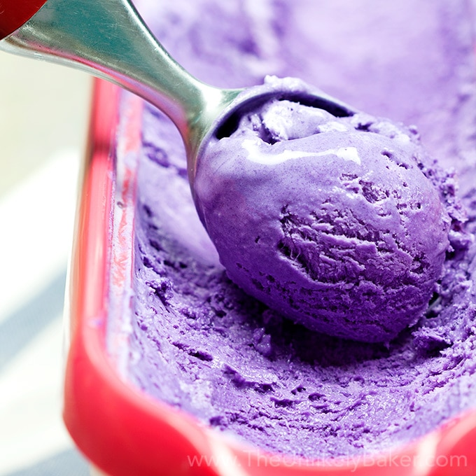
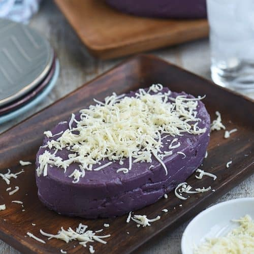
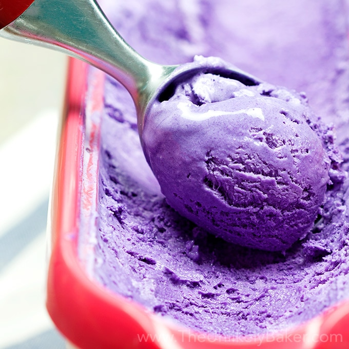
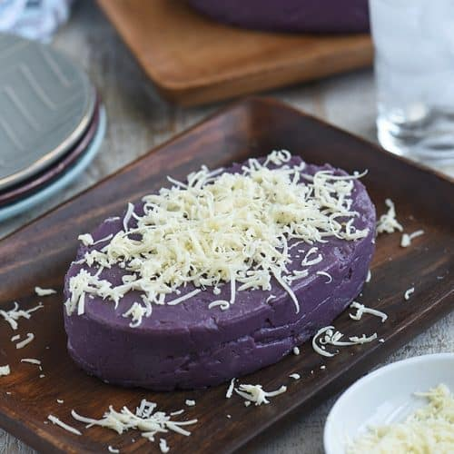

PHILIPPINES

The national dish of the Phillippines is Adobo, usually served with Chicken or Pork and rice. Adobo is prepared using many ingredients to create a marinade, like white vinegar, soy sauce, garlic, peppercorns, and bay leaves. Adobo also exists in other cultures as it is also a Spanish cuisine. However, the main ingredients of Philippine adobo are ingredients found in Southeast Asia, like the ones listed prior.
Lechon is one of the most popular dishes in the Philippines. It is where the pig is slowly-roasted and is usually stuffed with ingredients like lemongrass, tamarind, garlic, onions, and chives. Traditionally, it is served whole on a platter at celebrations and festive events such as weddings and Christmas. Once the meat is properly roasted and falls off the bone, people tend to eat every part of the pig. Lechon is usually served with a thick and rich liver sauce that is cooked with sugar, herbs, and vinegar. Lechon is also popular in other countries such as Cuba, Puerto Rico, Dominican Republic, and Spain.
Pancit is a traditional Filipino noodle dish. It is a stir-fry made with noodles, vegetables and meat.
Some common ingredients:
Vegetables: Cabbage, carrots, onions, green beans, celery.
Meat: Chicken, beef, pork, shrimp.
Noodles: Either noodels are thin or thick.
Pancit dishes are often named after the types of noodles used. The most commonly used noodles are canton (egg noodles), bihon (rice vermicelli), lomi (thick egg noodles), miki (soft yellow egg noodles), and many more.
Pancit is considered to be both an everyday food and a comfort food. Pancit can be eaten alone but is also eaten with white rice, bread, and rice cakes. Pancit dishes are commonly served during gatherings, events festivals, and religious activities, the main reasoning being that the can easily be cooked in large quantities.
Halo-halo is a popular summertime dessert. The name means "mix-mix" as the dish contains a variety of ingredients mixed together. The dish layers shaved ice and different layers of sweet beans, fruits and other treats then drizzles with milk. It also contains toppings like leche flan, ube halaya, or even ube ice cream. It can be considered to the unoffical national dessert of the philippines.
 


